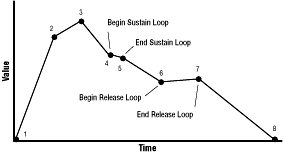
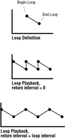

sawenv.dsp and sawenvsvfenv.dsp, have built-in envelope players. Each envelope player is tied to one attribute of the instrument. In sawenv.dsp, the envelope player is tied to amplitude, so when it plays an envelope, it shapes a note's loudness over time. In sawenvsvfenv.dsp, one envelope player is tied to amplitude, and a second envelope player is tied to a filter. The filter envelope player controls the timbre of a note over time.
A third Audio folio instrument, envelope.dsp, is nothing but an envelope player. It has no sound synthesis or sampled sound source, so when it plays an envelope, it does not directly control sound attributes. Instead, it puts out a control signal through its output. The signal can be connected to a knob of any other instrument, which applies an envelope to the attribute controlled by the knob. For example, if the output of envelope.dsp is attached to the amplitude knob of sampler.dsp, then when envelope.dsp plays an envelope, the envelope shapes the amplitude of the audio signal coming from sampler.dsp. This flexibility allows you to apply envelopes to different attributes of many instruments without built-in envelope players.
Table 1: Tag arguments that define the characteristics of an envelope.
-------------------------------------------------------
Tag Name |Description
-------------------------------------------------------
AF_TAG_ADDRESS |A pointer to array of
|DataTimePair points defining the
|shape of the envelope.
-------------------------------------------------------
AF_TAG_CLEAR_FLAGS |Set of AF_ENVF_ flags to clear.
|Clears every flag for which a 1
|is set in ta_Arg.
-------------------------------------------------------
AF_TAG_FRAMES |The number of points in the
|envelope array.
-------------------------------------------------------
AF_TAG_MICROSPERUNIT |The number of microseconds per
|envelope unit. The default is
|1000, which sets each unit equal
|to one millisecond.
-------------------------------------------------------
AF_TAG_RELEASEJUMP |The number to jump to when you
|call ReleaseInstrument().
-------------------------------------------------------
AF_TAG_RELEASEBEGIN |The index of the start of the
|release loop. The default is -1,
|which signifies no loop.
-------------------------------------------------------
AF_TAG_RELEASEEND |The index of the end of the
|release loop. The default is -1,
|which signifies no loop.
-------------------------------------------------------
AF_TAG_RELEASETIME |The time in envelope units
|between the end and the
|beginning of the release loop.
|Default is 0.
-------------------------------------------------------
AF_TAG_SET_FLAGS |Set of AF_ENVF_ flags to set.
|Sets every flag for which a 1 is
|set in ta_Arg.
-------------------------------------------------------
AF_TAG_SUSTAINBEGIN |The index of the start of the
|sustain loop. The default is -1,
|which signifies no loop.
-------------------------------------------------------
AF_TAG_SUSTAINEND |The index of the end of the
|sustain loop. The default is -1,
|which signifies no loop.
-------------------------------------------------------
AF_TAG_SUSTAINTIME |The time in envelope units
|between the end and the
|beginning of the sustain loop.
|Default is 0.
-------------------------------------------------------

Figure 1: Shape of an envelope
An Audio folio envelope can have as many points as you care to set, which allows you to define very complex envelope shapes. Each point is defined by the DataTimePair data structure, shown in Example 2.
Example 1: DataTimePair Structure
typedef struct DataTimePair
{
uint32 dtpr_Time;
int32 dtpr_Data;
} DataTimePair;
DataTimePair expects two values:
dtpr_Time
dtpr_Data
Data is a 32-bit signed integer that, because the DSP handles 16-bit values, should be restricted to a signed range from -32,768 to 32,767, or an unsigned range from 0 to 65,535. Values beyond either of these ranges will be truncated.
An envelope's sustain loop is defined by the tag arguments AF_TAG_SUSTAINBEGIN, AF_TAG_SUSTAINEND, and AF_TAG_SUSTAINTIME. The first two tag arguments set the beginning and end of the loop. Each argument is an index from the beginning point of the envelope. (The first point is 0.) If you want the sustain loop to extend from the third point of the envelope to the seventh point, then AF_TAG_SUSTAINBEGIN should equal 2 and AF_TAG_SUSTAINEND should equal 6. Note that loop beginnings and endings must fall on a point. If you want a loop point between existing points, simply add a new point to the envelope's array, then specify it with one of the sustain tag arguments.
Note that the beginning and end of a loop can be set to the same envelope point. If so, the envelope holds at that point's value as long as the loop plays.
The tag argument AF_TAG_SUSTAINTIME controls what happens during playback in the return from the end of a loop to its beginning. The value in this tag argument sets the amount of time, in envelope units, the envelope player takes to go from the end to the beginning of the sustain loop. The default value, 0, sets the envelope to return from the loop's end to its beginning without delay. Values higher than 0 delay the return from end to beginning.
When a loop return interval is 0, the envelope jumps from the end value to the beginning value. When a loop return interval is greater than 0, the envelope player interpolates values between the ending value and the beginning value. This creates a ramp between the end of the loop and the beginning of the loop (as shown in Figure 2).

Figure 2: Envelope loops
The release loop is also defined with three tag arguments: AF_TAG_RELEASEBEGIN, AF_TAG_RELEASEEND, and AF_TAG_RELEASETIME. These tag arguments fill the same purpose for the release loop as the SUSTAIN tag arguments do for the sustain loop.
DataTimePair envelope points to define the envelope shape you want. You then use this call:
Item CreateEnvelope( DataTimePair *Points, int32 Numpoints, int32 SustainBegin, int32 SustainEnd );*Points, a pointer to the array of envelope points; Numpoints, a value specifying the number of points in the array; SustainBegin, an index to the location of the beginning of the envelope's sustain loop; and SustainEnd, an index to the location of the end of the envelope's sustain loop.
When it executes, CreateEnvelope() creates an envelope item using the parameters you passed and sets the AF_TAG_ADDRESS, AF_TAG_FRAMES, AF_TAG_SUSTAINBEGIN, and AF_TAG_SUSTAINEND values. If successful, it returns the item number of the envelope. If unsuccessful, it returns a negative value (an error code).
To further define an envelope created with CreateEnvelope(), use SetAudioItemInfo() to change its tag argument values. For example, you can use SetAudioItemInfo() to change the envelope unit duration or set a release loop location. You can also use the CreateItem() call to create an envelope with custom attributes set with a tag argument list.
envelope.dsp instrument, and then use ConnectInstrument() to connect the output of envelope.dsp to the appropriate knob of the playerless instrument. To attach an envelope to an instrument, use this call:
Item AttachEnvelope( Item Instrument, Item Envelope, char *EnvName )
The names of an instrument's envelope players are listed in
the instrument's description in Instrument Templates, of the 3DO Music and Audio Programmer's Reference. In most cases, the names are abbreviations of the envelope names. For example, AmpEnv for an amplitude envelope player or FilterEnv for a filter envelope player. The instrument envelope.dsp uses Env for its single envelope player. If you pass NULL instead of a pointer to the envelope player name, then "Env" will be used.
When AttachEnvelope() executes, it attaches the specified envelope to the specified envelope player of the specified instrument. It creates an attachment item containing the characteristics of the attachment and returns the item number of that attachment. If unsuccessful, it returns a negative value (an error code).
Note that you can attach a single envelope to multiple instruments and envelope players. You can also, if desired, change an envelope's data points while it is attached to an instrument. Be careful that the envelope is not played while you are changing its points: the envelope player is a high-priority task that can execute while you are in the middle of changing data.
Err DetachEnvelope( Item Attachment )
Err DeleteEnvelope( Item Envelope )
Note that DeleteEnvelope() only deletes the envelope item and its attachments. It does not delete the array of envelope points defining the envelope's shape. Your task must do that itself.